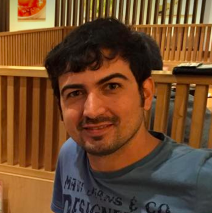

Hakkında
İçerik Listesi
- Türkçe Programlama Dili Hakkında
- Geliştirici ve Katkıda Bulunanlar
- Sürüm Tarihçesi
- Uyumluluk Notları
- Kodlama İçin Bazı Kaynaklar
Türkçe Programlama Dili Hakkında
Nedir?
Yürütülen bu proje; bir programlama dili Türkçe olabilir mi, hiç bilmeyenlerin ya da deneyim sahibi olmayanların öğrenmesine katkı sağlayabilir mi gibi sorulara cevap aranması amacıyla her hangi ticari bir amaç gütmeden ortaya konmuştur.
Amaç, evrensel bir dil geliştirmekten ziyade, öğretmede kullanıbilecek pratik bir dil olmasıdır.
Sadece dil terimlerini Türkçe'leştirmeden ziyade onları görselleştirmeye çalışması ile programlamayı yeni öğrenenlere faydalı bir biçimde öğreteceği düşünülmektedir. Yazım dili olarak C/C++/Java ve Python dillerini benimsemesi bu dillere geçişi kolaylaştırması için amaçlanmıştır.
Geliştirilmekte olan bu dille irtibatta kalmak veya katkıda bulunmak isterseniz aktif facebook sayfasını veya alakalı grubu buradan takip edebilirsiniz.
Dilin söz dizimsel özellikleri nedir?
Kullanılan dilin söz dizimi (syntax) özgün olarak üretilmiştir. Her programlama dilinde olduğu gibi esinlendiği bir kaç güncel programlama dili mevcuttur. Bunlar arasında Java/C++ dil ailesi ile Python dili olduğu söylenebilir.
Kullanılan dilde; öncelikle alışılageldik dil öğelerinin kullanılmasına dikkat edilmiştir. Örneğin Java dil ailesinden bileşik komutların süslü prantezde yazılması alınmış, satır sonlarının noktalı virgülle bitme zorunluluğu olmaması yönüyle de python örnek alınmış denebilir.
Programlama öğrenen kişinin programın çalışma mantığını anlamasına yardımcı olması hedeflenen dilin özelliklerinden bir kaçını şöyle maddeler halinde sayabiliriz:
- Anlaması kolay (doğal konuşma diline yakın)
- Sadece amaca özgü olacak kadar detaylı (gereksiz detayları olmayan)
- Web üzerinde kodlanabilen ve çıktıları alınabilen/gözlemlenebilen
Bu motivasyonla; öncelikle nasıl bir dil hedeflediğimizi daha kitabi bir şekilde anlatalım:
- Dinamik tipleme (dynamically typed): yani veri türü olmayan bir dil. Bu noktada Javascript ya da Python diline benzetildiği söyleyenebilir. Buradaki amaç, kulanıcıyı gereksiz detaylara boğmadan ve çalışma aşamasında performans kaygısı gütmeden temel programlama öğelerinin anlatmaya yönelik bir dil.
- Nesne yönelimli (object oriented): Güncel bir çok dilde standart halini almış olmasından ve karmaşık (complex) veri yapıları gibi kavramların kodlanabilmesi ve öğretilebilmesi adına nesne yapısı ve NYP (nesne yönelimli programlama) öemli bir hal almaktadır. Ayrıca; bildiğini üzere veri yapılarındaki her bir eleman bir nesne olarak düşünülebilir. Örneğin bağlı listede (linked list) veya çizge (graph) üzerinde her bir eleman diğer elemanlarla etkileşim halindedir ve bazı fonksiyonları yerine getirirler. Bu nedenle veri yapılarının öğesi olan her bir eleman bir nesnedir desek çok da yanlış demiş olmayız.
- Üst seviyeli (high level): buradaki amacımız ise kıyasla daha kolay öğrenildiği ve uygulandığı ve yeni başlayanların çabucak anlaması için en uygun dil paradigması olan üst seviye programlama dili model edilmiştir.
Dilin teknik özellikleri nedir?
Bilindiği üzere her bir programlama dili makinenin anlayabileceği makine dili üzerine soyutlamalar yaparak geliştirilir ve biraz daha detaylı bahsedersek; bu bir takım araçlar özel araçlar -söz dizim hatası (syntax error) için ayrıştırıcı (parser), bunları anlamlı hale getirip makineye (bilgisayar donanımına) ileten yorumlayıcı (interpreter) ya da derleyici (compiler)- kullanılarak yapılır.
Bizim yukarıda bahsettiğimiz gereksinimlerin karşılanabilmesi için -web üzerinde kodlanabilen ve çıktıları alınabilen/gözlemlenebilen- bahsedilen araçların da web tarayıcının imkan verdiği Javascript dilinde yazılması icap etmektedir. Javascipt istemci (client) tarafında çalıştığından sunucu taraflı sistemlere göre daha çevik (dynamic) uygulamalar yapılması söz konusu olabilmektedir.
Bu projede ayrıştırıcı (parser) olarak Javascript tabanlı peg.js kütüphanesi kullanılmaktadır. Peg.js farklı dillerde yazılmış Yacc (Yet Another Compiler Compiler), Bison ve ANTLR benzeri bir çeşit ayrıştırıcıdır. Sözü geçen bu ayrıştırıcılar ise sırasıyla C, C++ ve Java dillerinde yazılmıştır. Ayrıştırmadan sonra elde edilen parçaların mana kazanması, işlenmesi için ise javascript dili kullanımlamktadır.Geliştirici ve Katkıda Bulunanlar
Dilin aktif olarak 2 geliştiricisi bulunmaktadır, ama fikir verme anlamında bir çok kişi projenin elinden tutmuştur.Katkıda bulunanlar ve konuları
Aşağıda bir şekilde iletişime geçmiş ve değerli fikilerini paylaşmış kişilerin verdiği yorumlar mevcuttur:
| Katkıda bulunan | Katkı yaptığı konusu | Tarih | |
|---|---|---|---|
| 1 | Harun Kaya | - syntax veya runtime errorlar hakkında geliştiremeler olsa iyi olur - değişken tanımlarken "var" değilde "değişken" tipini kullanılması daha makul olmaz mı? - adımların ilerleme hızını ayarlabileceğimiz kaydırıcı (slider) koyarsan daha etkileşimli olur gibi sanki? |
30 Temmuz 2017 |
| 2 | Ahmet Sarıcı | - Bu dil diğer dillerden farklı jenerik bir dil olduğundan, bu dilden başka dillerde çıktı üretmek mümkün olabilir mi? Mesela C veya Java gibi. - Rehber kısmında başlıkları sayfa sayfa görüntülense daha iyi olmaz mı? |
2 Ağustos 2017 |
| 3 | Hande Çelikkanat | - "hatali kod" yazılsa süper olur, sonra detayli aciklama girersin, bu ilk şimdi bakacak kullanıcılar icin iyi olur. |
31 Temmuz 2017 |
| 4 | Salih Can Çamdere | - "var" yerine Türkçe bir şey yapılsa? | 1 Ağustos 2017 |
| 5 | Caner Topçu | - Belki 3-4 modlu birşey olsa, önce şekillerle flowchart, sonra türkçe kodlar, sonra 2 tane programlama kod örnegi gibi modları olabilir. hatta flowchatı kademeli öğrenme şeklinde oyunlaştırarak yapabilirsin. | 2 Ağustos 2017 |
| 6 | Kadir Fırat Uyanık | "var" yerine farklı bir kelime, özellikle Türkçe kullanılması mümkün olur mu? | 2 Ağustos 2017 |
| 7 | Murat Akın | - Genel olarak bu tarz eğitim platformları aşamalı eğitim metodu kullanıyor. Video ile anlatıp bunun uygulamasını yaptırıyor ve doğruluğunu kontrol Edip öneride bulunuyor.. -Kodlama sayfasında yazdığımız kodları txt olarak kaydetmk mümkün ancak daha önceden masaüstüne yazdığımız txtleri çağırma olursa güzel olur diye düşünüyorum. |
5 Ağustos 2017 |
| 8 | Caner Topçu | - Kodu yazarkeninfo tuşuna bastığımda sayfa gitmeden gelse bu bilgiler, popup window gibi, birşeyler yazarken kodları incelemek istiyorum ama doğru mu yanlışmı diye diğer sayfaya gidince kopuyor. - Bir de geri dönmek için en başa geri dönmem gerekiyor her zaman, mesela ana sayfa butonu kenarda bi yerde sabit durabilir. |
7 Ağustos 2017 |
| 9 | Selin Coşar | Merhaba, benimki naçizane bir istek. Kapaktaki görüntüde "online" kelimesinden ziyade farklı bir kelime geçse idi mutlu ederdi. | 7 Ağustos 2017 |
| 10 | Cemal Aker | - Video derslerle çekilip olayı canlandırabilirsin biraz. - Geliştirilen dil Ebob (En büyük ortak bölen) bulma problemi mesela öklid algoritması ile algoritması yazılabilir. Yani, aslında bi yandan da algoritma ve veri yapıları eğitimi de verilebilir. Bu sayede de hem dil gelişir hem de kullanım alanı doğar. |
8 Ağustos 2017 |
| 10 | Hüseyin Cahit Kebapçıoğlu | - Forum açılır ve bir topluluk oluşturulursa çok iyi olur, bu sayede insanlar hem kodlarını paylaşabilirler hem de sorun yaşadıklarında birbirlerine danışabilirler. - Üyelik sistemi konulup ufak daily challange'lar ve görevlerle kullanıcıların puan kazanması sağlanabilir.Bu sayede kullanıcılar forumda farklı yerlere sahip olabilirler. |
8 Ağustos 2017 |
| 11 | Nevzat Sevim | - Kod syntax error oldugunda calistir dedigimiz de ya da demeden. Hata oldugunu soylese daha guzel olabilir. - Suan anladigim kadariyla sadece bu web sitesi uzerinden calisiyor. Ileride baska ortamlarda calistirabilme ihtimaline binaen, Kodlari diger ortamlara entegre olabilecek sekilde yazmak mantikli olabilir. Mesala windows uygulamasi uzerinden kod yazmayi ogreniyor olsun, belki surekli internetde olmayabilir offline mod da calisabilmesi icin de boyle bir sey yapabilirsiniz. |
9 Ağustos 2017 |
| 12 | İrfan Düzenli | - Kaç değişken kullanılmışsa o kadar var kullanmam gerekiyor. Bu da gereksiz tekrara neden olacak. Değişkene herhangi bir değer vermezsem çalışmıyor. Bunları düzeltirseniz daha iyi olacaktır. | 15 Ağustos 2017 |
| 13 | Kadir Kara |
- Hataların satınırı ve yerini gösteren hata dökümü yeni öğrenen birisinin işine epey yarar. - Türkçe Programlama Dili'nin gelişim sürecini raporlamak ta daha sonra bu işe gireceklere bilgi vermesi açısından raporlanabilir. - Sürekli Eğitim Merkezi gibi yerlerde Workshop verilerek dil tanıtılabilir. - Programlamaya yeni başlayan kişilerle aracın işe yararlığı test edilebilir. |
17 Ağustos 2017 |
| 14 | Kadir Akın | - Websitesinin ismi çok uzun. Daha kısa ve kolay yazılacak bir websitesi ismi bulursanız kullancılar açısından çok daha kolay olacaktır. - Bir de sanırım henüz fonksiyon tanımlaması özelliğini yapmamışsınız. Sanırım eklenecek özellikler arasında aklınızdadır. |
17 Ağustos 2017 |
| 15 | Efe Tiryaki | - Turkcenin yazim cumle yapisina gore kurgulamakta fikir olarak ilginc olabilir. Örnegin: - eğer (a<5) ise {bir şey yap} (a < 5) ise {bir şey yap} değilse {bir şey yap} ..... - (a<5) iken {a++} (while döngüsü) - değisken x={1,2,3} ; x herbiri için{ birseyler yap} - Bir de sanırım henüz fonksiyon tanımlaması özelliğini yapmamışsınız. Sanırım eklenecek özellikler arasında aklınızdadır. |
17 Ağustos 2017 |
| 16 | Fatih Toy | - Bir önerim syntaxda gelenekselin dışına çıkıp Türkçe cümle yapısını taklit etmek olabilir. Öğrenciler konuştukları gibi kod yazabilirler ise çok faydalı olur diye düşünüyorum. | 18 Ağustos 2017 |
| 17 | Mustafa Yemural | - Eğer web veya mobil gibi alanlarda uygulama geliştirmek gibi bir amacı olacaksa bence c tipi anahtar kelimelerin Türkçe'ye çevrilmesinden ziyade özgün bir syntax ve semantic kullanılarak çok güzel bir şeyler çıkabilir. Başarılar... | 21 Ağustos 2017 |
| 18 | Mehmet Emin Fedar | - for yerine "sayarakYinele" değil de "say" veya "saydir" gibi kısa şeyler kullanılabilir. "değişken" yerine (o da kalsın tamam da ek olarak:) "değ" denebilir. Tabi bunun eğitim amaçlı olduğunu düşünürsek verilen isimler gayet de iyi :) | 22 Ağustos 2017 |
| 18 | Yunus Emre Düşmez | - Benim aklıma doğrudan, türkçe olmuşken hazır bir de çocuklara yönelik bir şeyler yapılabilir mi sorusu geldi. - Bir de konsol kod ekranının üstünde olsa veya sağ taraftaki görüntüleme ekranının altında olsa ve konsolda yazılar alt alta yazsa daha iyi olur gibi. |
22 Ağustos 2017 |
Kim ne diyor?
Farklı disiplinden insanları proje hakkında verdiği görüşler ise şu şekilde:

Çok güzel, temel algoritma kavramlarının öğrenilmesinde çok faydalı olur, İngilizce temelli dil bazı öğrenciler icin engel olabiliyor.
Yrd. Doç Fatih Toy - İstanbul Medipol University
Gerçekten çok iyi bir iş çıkartmışsınız. Özellikle bir yazılım indirmeye ve kurmaya gerek kalmadan kodlama, programlamaya yeni başlayanlar için çok kullanışlı olmuş. İlk fırsatta 11 yaşındaki kardeşime nasıl yapıldığını öğretmeye çalışacağım.
Kadir Akın - Quantum Engineering Center, ETH Zurich

Bunu sonunda biri yapmaya başladı. Bu tür adımların özellikle çocuklar için çok faydalı olacağını düşünüyorum. Tebrik ederim, umarım projenin devamı gelir. Başarılar
Onur Kağan Aldemir, Mimcrea'da Android Geliştiricisi

Harika bir çalışma olmuş. Emeğinize sağlık. Çocuklar rüya gördüğü dilde kodlamanın mantığını öğrenirse, hayal kurması daha kolay olur.
Mustafa Dişçi, Ustafikirler Kurucusu

Kamu kurumlarında da özellikle genç arkadaşlarımızı, programlama ve programlama mantığını öğrenmeye teşvik ediyoruz. Çalışmanız bu anlamda bi kat daha değerli olduğuna inanıyorum. 7'den 70'e programlama.. Emeğiniz, gayretiniz için teşekkürler.
Önder Karagöz, DSİ Proje Mühendisi
Türkçe metinsel kodlama da gerekli bence, ben ilkokuldaki yeğenime biraz öğrettim hem öğrendi hem de çok sevdi, buna açık küçükler için yapılmalı, geç bile kalındı hatta.
Pervin Büyük, Öğretmen
Kesinlikle Türkçe olması daha kolay, programlamayı öğrenme yasini düşürmede etkili olur. Bundan insanları haberdar etmek lazım, özellikle okullara duyurmak lazım.
Hande Çelikkanat, Dr. Bilgisayar Mühendisi

Liseden yeni gelmiş, özellikle İngilizce hazırlık bölümü bulunmayan üniversitelerimizde; programlama mantığını giriş seviyesinde anlatmada önemli bir araç olacağını düşünmekteyim.
Serdar Çiftçi, Dr. Bilgisayar Mühendisi

Keşke, lise yıllarında böyle bir imkanımız olsaydı. Programlama gençlik hayalimiz. Tükçenin matematiksel gramer yapısı programlama ifadelerine de gerçekten çok uygun. Sizleri tebrik ediyorum, bu bir ihtiyaçtı.
Ali Kumaş, -

Gerçekten üzerine düşülmesi gereken bir konu. Sizleri tebrik eder, başarılar dilerim. Dilin verdiği üretkenlik gücü hiç bir şeyde yoktur...
Sebuhi Novruzovich, Türkolog
Kaynak kodlara erişim?
Bu proje açık kaynak olarak geliştirilmektedir, ünlü versiyonlama sistemi GitHub üzerinden online olarak erişebilir, fork edip kendi dilinizi de bu projeyi örnek alarak geliştirebilirsiniz.
Dil geliştirmekla alakalı soruları da açık bir şekilde cevaplayabiliriz.
Github bağlantisi: https://github.com/mehmetakifakkus/turkceprogramlamadiliSürüm Tarihçesi
- 0.0.1 [3 Tem 2017]- Sadece değişken tanımlama, matematiksel işlemler, "eger", "degilse". Hemen hemen bütün komutlar görsellenebilir durumda.
- 0.1.0 [12 Tem 2017]- "yinele", "sayarakYinele" gibi temel programlama komutlarında hatalar bulunduğu için ilk sürümde eklenmemişti. Bunlar da eklenince tekrarlı kod yazmak için gerekli komutlar mevcut oldu.
- 0.1.1 [14 Tem 2017]- Türkçe karakter kullanımına geçilerek tamamen Türkçe haline getirildi, "yanlis" yerine "yanlış", "dogru" yerine "doğru" gibi ifadeler kullanılmaya başlandı.
- 0.2.1 [22 Tem 2017]- Editör kısmında önemli geliştirmeler yapıldı. Siyah beyaz üzerine olan editorde hem komutlar renkli hale getirildi, hem de imlecin bulunduğu satır belirgin hale getirildi.
- 0.2.1 [27 Tem 2017]- Çıktılar kısmındaki değişken güncellemeleri daha düzenli hale getirildi. Yorum satırı gibi olacak şekilde renklendirilmesi ve formatlanması sağlandı. (Ahmet Selman Bozkır'a teşekkürler)
- 0.2.2 [29 Tem 2017]- Editörün satır sayısının artması ve azalması durumunda butonların yerinin kayarak editöre uyum sağlaması sağlandı.
- 0.2.3 [1 Ağu 2017]- Alt sağ köşeye "Temizle" ve "Kaydet" isminde 2 buton eklendi. Bunlara fonksiyon kazandırıldı.
- 0.2.4 [3 Ağu 2017]- "eğer değilse" komutunda bir hata vardı. Hatanın farkına vardıldı ve giderildi (Alican Yıldırım'a teşekkürler). Hakkında kısmı tamamlandı.
- 0.2.5 [5 Ağu 2017]- Kodlama Rehberi sekmesi konuları belirlendi. Değişkenler ve işlemleri ile İşleçler (Operatorler) konusuna giriş yapıldı.
- 0.2.6 [7 Ağu 2017]- Kodlama Rehberi'nde Seçme ve Döngü komutları konuları tamamlandı. Örnek kodlar hazırlanıp konuldu.
- 0.2.7 [9 Ağu 2017]- Değişken isimlerinde "_" karakterinin kullanılması eklendi. (Muharrem Engin'e teşekkürler.)
- 0.2.8 [11 Ağu 2017]- Ondalıklı sayılar sisteme eklendi. İşlem önceliğini yapmayı sağlayan parantez kullanımının tanınması sağlandı.
- 0.3.0 [13 Ağu 2017]- Bazı temel matematik fonksiyonları eklendi. "taban", "tavan", "mutlak", "karekök".
- 0.3.1 [16 Ağu 2017]- "eğer" ve "yinele" komutlarının iç içe çalıştırılabilmesi sağlandı.
- 0.3.2 [20 Ağu 2017]- Kodların yazılması esnasında otomatik olarak tamamlanması kısmı eklendi. Çalıştır butonuna basınca kod hata içeriyorsa bunun hangi satırda olduğu belirtilmesini sağlayacak kısımlar eklendi.
- 0.3.3 [22 Ağu 2017]- Örnek kodlara açıklamalar da eklendi, böylece kodlamanın ne amaçla yapıldığı hakkında kullanıcı bilgi sahibi olmaktadır. "değ" kelimesinin de değişken tanımı yapmak için kısaltma olarak kullanılması sağlandı.
- 0.3.4 [26 Ağu 2017]- Çalışma hızı ayarlar butonuna basılarak gelen pencereden ayarlanabilmektedir. 2 saniyede bir satır kod çalışabilmesinin yanında saniyede 5 satır kodun çalışabilmesi de mümkündür.
- 0.3.5 [27 Ağu 2017]- Kodlama ekranının tam ekran yapılabilmesi eklendi.
- 0.4.0 [28 Ağu 2017]- Mantiksal ifadeler "ve", "veya" ile bağlanabilir hale geldi. Bunların "eğer" veya "yinele" gibi ifadeler ile beraber kullanılması sağlandı.
- 0.4.1 [2 Eyl 2017]- Negatif sayılar tanımlandı ve sisteme dahil edildi.
- 0.4.2 [5 Eyl 2017]- Yaz komutu hem yazı türünde hem de sayı türünde ifadeleri parametre olarak alabilmektedir.
- 0.4.3 [8 Eyl 2017]- Örnek kodlar eklendi. Kodlar başlangıç seviyesi, orta seviye ve ileri seviye şeklinde kısımlara ayrıldı.
- 0.4.4 [12 Eyl 2017]- Kullanıcılardan gelen kodlar anasayfaya dahil edildi.
- 0.4.5 [19 Eyl 2017]- Rehber kısmında güncellemeler yapıldı. Gitbook kitap linki eklendi.
- 0.4.6 [20 Eyl 2017]- Kodlama ekranındaki kayma hatası giderildi.
Uyumluluklar hakkında
Kodların çıktıları ve animasyon halinde görüntülenebilmesi aşağıdaki tarayıcı ve versiyonlarda problemsiz olarak mümkündür:
- Internet Explorer 8+
- Edge
- Firefox
- Chrome
- Safari
- Opera
Kodlama İçin Bazı Kaynaklar
Kodlama yapabilmek için başka interaktif kaynaklar da mevcut, bunlar daha çok çocukların eğlenerek öğrenebileceği tarzda kaynaklar.
Şu araçlar sürükle bırakarak kodlama yapmaya imkan sağlamaktadır:
-
Google Made with Code
Bu adreste bir robota farklı görevler yaptırmaktasınız. Oldukça keyifli. -
Scratch
Bu adreste bir kediyi ileri, geri, yukarı aşağı hareket ettirebilir, ses çıkarmasını sağlayabilir, bunları farklı yollarla tetikleyebilirsiniz (klavyeye basınca, duvara carpınca vs.) - Edge
Şu araçlar metinsel kodlama yapmaya imkan sağlamaktadır:
-
Robomind
Robomind sayesinde bir kediyi ileri, geri, yukarı aşağı hareket ettirebilir, ses çıkarmasını sağlayabilir, bunları farklı yollarla tetikleyebilirsiniz (klavyeye basınca, duvara carpınca vs.) -
Kodris
Kodris ile farklı karakterleri ileri, geri, yukarı aşağı hareket ettirerek bir hedef noktaya götürmeye çalışıyorsunuz. Python programlama dilini oyunlaştırarak öğretme amacını güdüyor bu uyguluma. Senelik ücreti var, veli ve öğretmen desteği sağlıyor